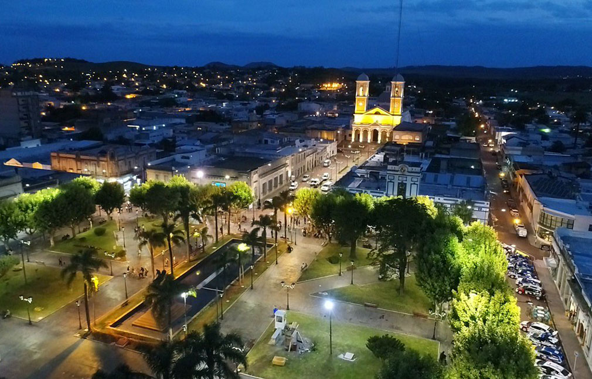

My favorite city is Minas! I was born in Minas, the capital of Lavalleja in Uruguay. It's a small town with beautiful landscapes.
What I love most about my city is the peaceful environment you can feel whenever you are there.
